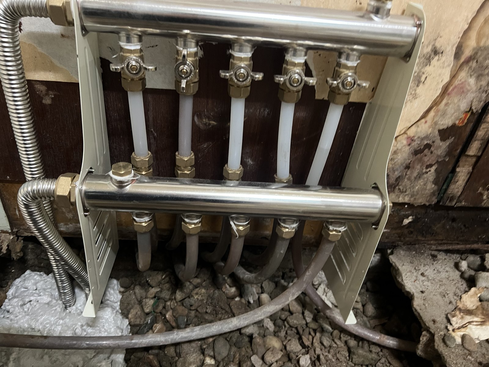
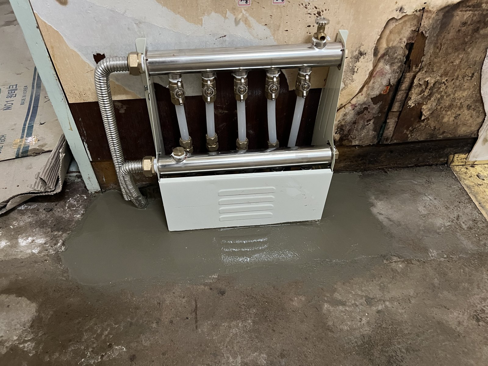

대전 난방배관 청소｜충무로 현장 방별 녹물 배출 작업

현장 작업 한눈에 보기
- 현장
- 충무로 인근 · 난방 배관
- 문제
- 방별 난방 배관 녹물 배출 작업
- 작업
- 방별 녹물 배출
작업 후 가동 확인 - 결과
- 현장 공정 기록상 정상 가동
수질 수치·총 소요시간 미확인
대전 충무로 인근에서 진행한 방별 난방배관 녹물 배출 사례입니다. 분배기 연결 상태와 작업 후 정상 가동 기록을 살펴보고, 분배기 교체와 구분해 상담할 범위를 안내합니다.
이번 작업은 분배기 교체와 별도로 진행한 배관 청소입니다
대전 충무로 인근 현장에서 방별 난방배관의 녹물을 배출했습니다. 2026년 9월 30일 진행한 작업으로, 같은 현장의 새 분배기 설치와는 공정을 나누어 소개합니다.
분배기를 바꾸는 작업과 각 방으로 이어지는 배관을 청소하는 작업은 상담할 때도 구분해 두면 좋습니다. 이번 글에서는 방별 녹물 배출과 작업 후 가동 확인을 다룹니다.
첫 사진은 녹물 배출 작업 중 분배기와 각 배관이 연결된 상태입니다. 개별 밸브와 연결부 위치를 확인할 수 있으며, 배관 내부나 배출수 자체를 촬영한 사진은 아닙니다.
방별 녹물 배출 과정과 사진으로 확인할 수 있는 범위
현장 공정 기록에 따라 각 방의 난방배관 녹물 배출 작업을 진행했습니다. 아래 사진은 밸브와 하부 연결부를 다른 각도에서 보여줍니다.
작업 여부와 수질 측정 결과는 구분해야 합니다. 이번 자료에는 배출수의 색상과 수질 측정값이 없어 내부의 녹이 완전히 제거됐다고 설명하지 않습니다.
상담하실 때는 특정 방만 불편한지, 여러 방에서 같은 증상이 나타나는지 알려 주세요. 이는 다음 현장의 점검 범위를 정하기 위한 질문이며, 이 현장의 고객 증상으로 확인된 내용은 아닙니다.

작업 후 가동 확인과 사용 중 살펴볼 점
현장 기록에는 녹물 배출 후 정상 가동을 확인한 것으로 남아 있습니다. 이번 사례에서 안내할 수 있는 결과는 이 단계까지이며, 난방 온도·압력 수치나 난방비 절감 효과를 확인한 자료는 없습니다.
사용 중 분배기 주변에 물방울이나 젖은 흔적이 보이면 위치와 발생 시점을 남겨 주세요. 배관과 밸브는 직접 풀지 말고 점검을 요청해 주세요.
대전 난방배관 청소를 상담할 때는 아래 안내에 따라 사진과 증상을 준비해 주세요. 같은 현장의 분배기 교체 범위는 이어지는 관련 사례에서 확인하실 수 있습니다.
